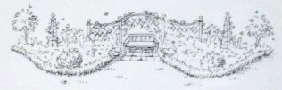
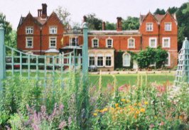
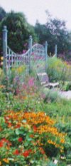
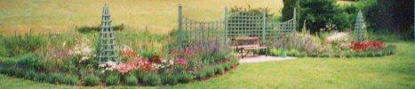
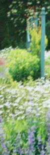
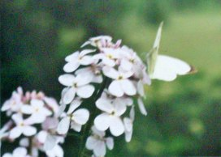

|

|
Garden
The Butterfly garden at Juniper Hall, Dorking, Surrey.
Designed by Valerie Baines F.L.S.



The butterfly design evolved as I considered the shape of the flowerbeds on either side of the central paving, trellis and seats; and the curve of the edge of the beds is shallower on the South side to fit in with the ha-ha that gives the house an open view of the hillside. The garden was planted in March 2000. The honeysuckle will, in time, cover the trellis, and the buddleias will become more like trees, while the rest of the plants, like the lavender hedge, will become more established. It contains over 40 different sorts of plants, including nearly all of the Butterfly Conservation list of the top twenty best nectar plants, as well as plants known to be used by moths and butterflies for their larval food plants. This is explained in the accompanying plant list and plan, giving the reasons for their inclusion.



It delights me that this is the only garden I know where, when some plant shows sign of being eaten, everyone is interested and quick to try to identify the culprit, without reaching for the bug-gun or spray! It is maintained organically without pesticides or slug pellets; although in wet weather there has to be a constant "snail watch" as the place abounds in Roman snails, which are protected, so they have to be regularly transported in buckets to a distant part of the grounds. I hope that this garden will serve as an inspiration and example of the beauty of its wild flowers and herbs that are grown for a purpose, as well as looking attractive.
The creation of the garden at Juniper Hall Field Centre, Mickleham, near Dorking, was sponsored by the Surrey (with S.W. London) branch of Butterfly Conservation. Juniper Hall welcomes visitors to see the Butterfly garden, but would like them to contact or visit the reception office first, where they can also get a planting plan.
©2008, ©2009, ©2010, ©2011 Valerie Baines |